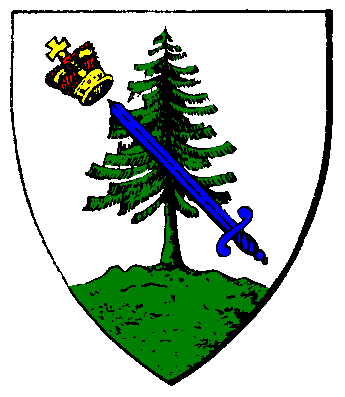

| Übersicht,
Alltägliches und Lokales (RPG) |
|
Nachwuchs
|
| Marea (RIP) |
Nachdem uns unser Erstgeborener nicht sehr viel Anlaß zur Freude gegeben hat, haben wir uns entschlossen einen neuen Versuch zu wagen.
Ich erwarte in den nächsten Stunden unser 2. Kind.
Nach der Vorhersage einer Heilerin, wird es diesmal ein Mädchen.
Baronesse Marea,
Vorsteherin von Lenthargo,
Ehefrau des ehrenwerten Merrik Mercadur,
Ratsministerin der Nation der Gondorias
Zur 12. Stunde am 89.Dunkelfrost im Jahre 424 |
08.06.06 21:39
 |
|
| Merrik Mercadur (RIP) |
*aufgeregt auf und ab geht*
Baron Merrik Mercadur,
Vorsteher von Feste Loh,
Ehemann der reizenden Marea
Zur 13. Stunde am 89.Dunkelfrost im Jahre 424 |
08.06.06 21:46
|
|
| Morkeleb Ethiatrem (RIP) |
*seinem Freund einmal auf die Schulter klopft und mit ihm zusammen wartet*
Das wird schon *zwinkert*
Baron Morkeleb,
Vorsteher von Cor Castelli
Zur 23. Stunde am 89.Dunkelfrost im Jahre 424 |
09.06.06 0:00
|
|
| Níniel Fael (RIP) |
Da keimt doch Hoffnung auf: zwei unschuldige Kinder, die nun die Chance haben ~normal~ aufzuwachsen. Die wenn sie des eigenmächtigen Denkens fähig sind, nicht mehr an ihre Erzeugerin erinnert werden und so eine Chance haben zu *normalen* Wesen heran zu wachsen.
Für ihre Kinder tat diese *hustet* Dunkelelfe das einzig Richtige...
Mögen die Götter über die Kinder wachen und sich dafür einsetzen, so dass sie niemals erfahren müssen, aus welch naiv dummen Lenden sie enstanden!
Níniel Fael,
Herz des Phönix,
Ehefrau des ehrenwerten Elendaé Fael
Zur 6. Stunde am 90.Dunkelfrost im Jahre 424 |
09.06.06 1:38
|
|
Holgrîm
 |
*liest den Beitrag und freut sich auch schon sehr auf den Nachwuchs der auf der schönen kleinen Insel Tynd Perth Kardar aufwachsen wird wo er selber auch groß geworden ist*
HolliMandela
Zur 23. Stunde am 2.Saatmond im Jahre 425 |
09.06.06 17:06
|
|
| sabelente (RIP) |
*hallo ich bin da und auch wirklich noch ein mädchen, habe die besten eltern die es gibt*
sabelente
Zur 18. Stunde am 16.Saatmond im Jahre 425 |
12.06.06 22:04
|
|
Lysira Sternenlicht
 |
Liebe Marea und Merrik,
von ganzem Herzen gratuliere ich Euch zu Eurer gesunden Tochter. Möge sie Euch viel Freude bereiten und die Nächte nicht allzu schlaflos werden lassen.
streicht sich selbst unbewusst über den Bauch als sie wieder in der Menge verschwindet
Lysira von Kazaana,
Kardinälin im Dienste des einzig wahren Glaubens an Pheron,
Ehefrau des ehrenwerten Gregorian von Kazaana
Zur 21. Stunde am 18.Saatmond im Jahre 425 |
13.06.06 10:01
|
|
| Atalante Balan (RIP) |
Atalante Balan kommt durch zufall von dem eigenen Anschlag hier lang geschlendert und liest freudig, aber auch leicht nachdenklich diese Kundgebung. Kurzerhand hängt er auch einen Zettel dazu
Werte Dame , werter Herr,
ich gratuliere euch vielmals zu diesem Glück.
Auf das es ein gesundes kräftiges Mädchen wird das auf der Scherbe viel erreichen mag.
Gruß
Atalante Balan,
Priester im Dienste des einzig wahren Glaubens an Tura,
Verlobter der reizenden Sâlía A´nandaval
Zur 22. Stunde am 18.Saatmond im Jahre 425 |
13.06.06 10:10
|
|
| Dior e Feye (RIP) |
jaja, die Scherbe ist voller Wunder.
Kinder, die die Hebamme mit einem fröhlichen "Hallo, da bin ich" begrüssen, Frauen, die unfruchtbar sind, und plötzlich über Schwangerschaft klagen.
So lasst uns zu den Göttern beten, das es Wunder der guten Sieben sind.
Dior e Feye,
Kardinal im Dienste des einzig wahren Glaubens an Pheron
Zur 6. Stunde am 28.Saatmond im Jahre 425 |
15.06.06 17:05
|
|
Tar Aldarion
 |
Herzlichen Glückwunsch ihr beiden, möge das Kind schnell groß und Stark werden :)
Sir Tar Aldarion
Zur 20. Stunde am 28.Saatmond im Jahre 425 |
15.06.06 18:38
|
|
Rhunön
 |
Herzlichen Glückwunsch zu Eurem Sprechenden Kind.
Die Güte der guten Sieben hat die Scherbe mir einem neuen Wunder gesegnet. Ein Kind, das auf die Welt kommt, sprechen kann und Anschläge verfasst.
Und ich hoffe, es lesen noch einige meinen Anschlag, bevor Ihr den auch abreisst.
So sieht die Scherbenbevölkerung wenigstens, wessen Geistes Kind Ihr seid.
Sir Elenthalion
Zur 24. Stunde am 32.Saatmond im Jahre 425 |
16.06.06 17:06
|
|
| Titania Greenleafxxx (RIP) |
Nun, einerseits möchte ich ja zum Nachwuchs gratulieren, andererseits geben die Wichtel auskunft, das Mutter und Vater der menschlichen Rasse angehören. Die Tochter jedoch ganz klar als Halbling zu erkennen ist.
Wer weiß wie das geschehen konnte..
Markgräfin Titania Greenleaf,
Vorsteherin von Troja,
Hochmeisterin des Ordens,
Ehefrau der reizenden Sionnach Arolis Greenleaf
Zur 8. Stunde am 33.Saatmond im Jahre 425 |
16.06.06 19:05
|
|
| Fantaghiro (RIP) |
Tzes.. Titania.. trenne gefälligst.. somit ist doch alles möglich..
Markgräfin Fantaghiro,
Vorsteherin von Caras Aidoann,
Mama von Fenjana,
Ehefrau des ehrenwerten Xandor
Zur 9. Stunde am 33.Saatmond im Jahre 425 |
16.06.06 19:07
|
|
Ferret
 |
*ti zustimmen muss* seltsam, aber trotzdem alles gute dem kleinen mädchen.
Pfalzgraf Ferret,
Vorsteher von Lothianis Bay,
Ehemann der reizenden Lana von Hexenhain
Zur 16. Stunde am 38.Saatmond im Jahre 425 |
18.06.06 0:51
|
|
| Jolina (RIP) |
*liest sich alles durch und kichert leise*
Herzlichen Glückwunsch zur Geburt,
einen lustigen Namen hat sie ja bekommen, und er passt scheinbar ja auch. Aber musste die Tätowierung so gleich nach der Geburt sein?
Liebe Titania Greenleaf, ab und zu irren sich ja auch die lieben Wichtel etwas, behaupen so manche jedenfalls , es gibt ja auch Wichtel, die als Elfen geführt werden ... habe ich gehöhrt.
Liebe Grüße
Lady Jolina,
jüngste Dekanin der Scherbe
Zur 15. Stunde am 55.Saatmond im Jahre 425 |
22.06.06 0:03
|
|
Übersicht,
Alltägliches und Lokales (RPG)
|